来源：https://pszs5i3hhd.feishu.cn/docx/P1j7d7k7eoLqDGxuZP3c3TjBnHf
大家好，我是白龙笔记，加入生财后一直默默学习，今天很有幸给大家分享我这3年的一点浅薄经验。
我是在2022年经过朋友介绍，加入了生财。其实很早就久闻生财大名，随着生财一步步壮大，沉淀了很多优质内容，我也迫不及待的加入了。加入后果然大开眼界，也许刚开始的知识密度让我应接不暇，不过很快我也找到了自己使用生财的方法，就是根据自己要研究的领域，去搜索相关文章和人脉，进行专项学习。
得益于生财搭建了专门的搜索导航，这个导航不仅分类明确，也可以自由搜索自己想了解的干货。
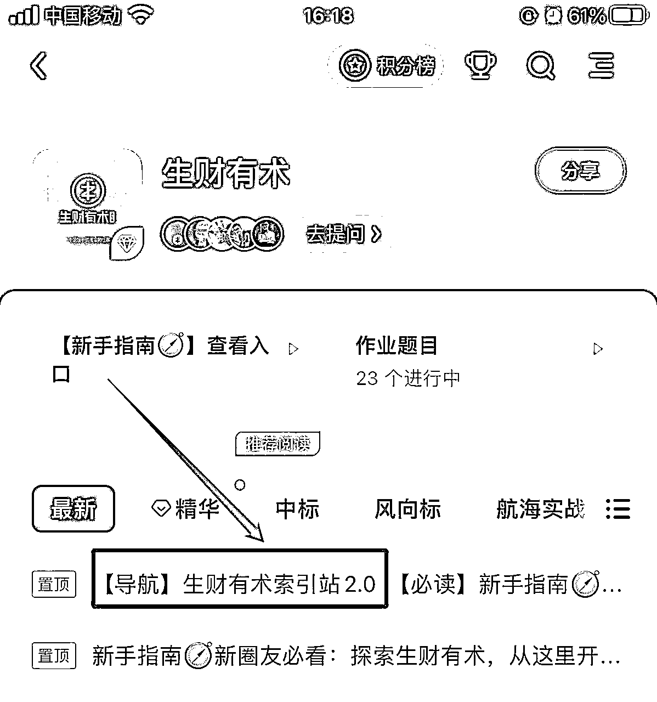
我研究的领域重点在于IP、小红书、知乎，通过在生财的学习，帮助我做出了一些小成绩，知乎创业话题做到累计3W+点赞，1W知乎粉丝；小红书幼师资料项目创造了一番天地，也累计带领336位学员做出不错的成绩；个人IP也在不断成熟和进步的路上.....而这也离不开我在生财的学习，更重要的还是要将所学投入实践中。边做边学，专项学习，这8个字是我分享给圈友们的经验和感悟。
想必大家对生财有术很了解了，我是白龙，取名来自《千与千寻》，寓意帮助别人实现愿望的人。老家湖北，大学读的建筑学，15年毕业后就去了我梦想的城市：深圳，当时我放弃了建筑行业，转行做互联网运营。
在深圳5年后，也就是2020年6月，我辞职后，开始了个人创业之路。
现在我主要运营创业类公众号（白龙笔记），现在1.7万粉。以及2个虚拟资源项目。
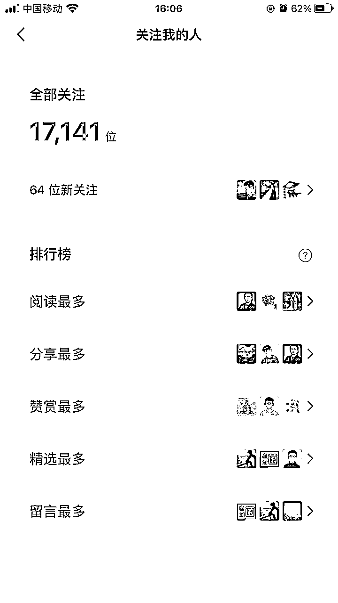
这3年期间，也折腾过很多项目，豆瓣引流项目、亚马逊电商业务、星座项目、CPA拉新、直播引流业务、中视频音乐号项目.....其中做的出众是幼师资料项目和小学资料项目。
七七八八加起来，这3年也创造了7位数的收益。相比较其他大佬一年就7位数，我这个成绩不算太多，不过也是我从0开始努力的结果。
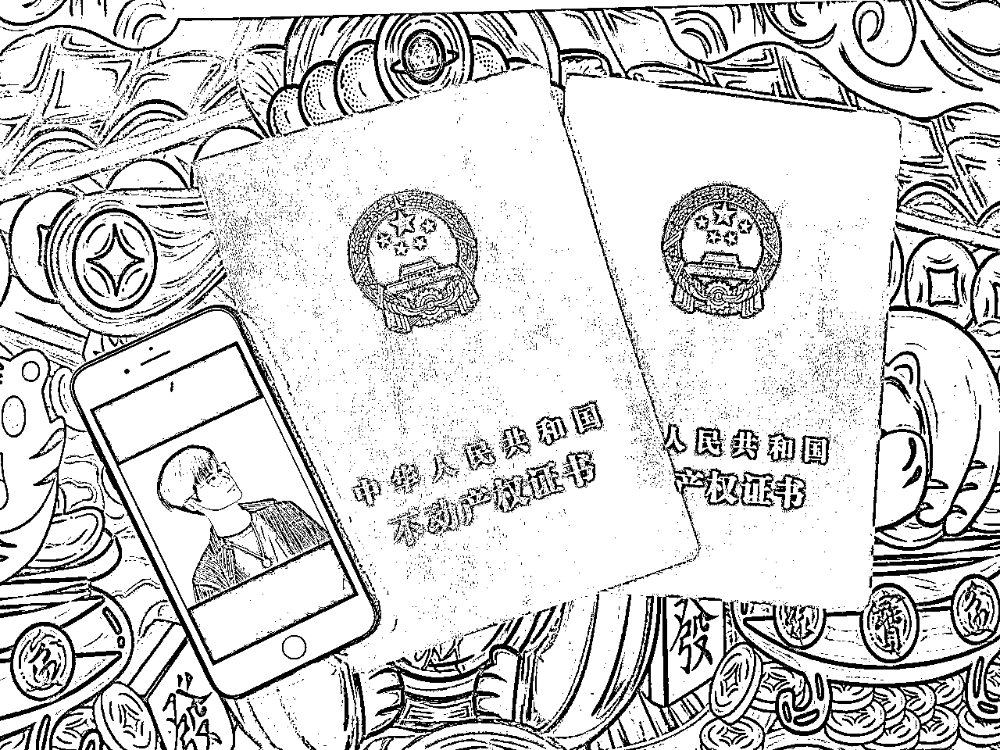
第一年其实过的很煎熬，属于前期探索期，收入微薄，而且生活也有各项开支，入不敷出，当时靠着我对未来的坚信，以及客户的支持，我坚持了下来。第二年，开始进入正轨，第三年，初见成效。回望走过的路，我相信我走的路是正确的。
我用实际努力证明，哪怕像我一样出身草根、没有背景和人脉、资金不足的人，仍然可以靠自己的努力和开悟，在互联网上也能取得不错的成绩。而这离不开我信奉的“长期主义”+“拜师学艺”+“坚持学习”。
我相信也有很多年轻人和我一样，想创造一份属于自己的小事业，但是现实很残酷，大部分人考虑稳定，因为担心风险，95%的人还是选择上班，而放弃了尝试另一种人生。
这个我非常理解，这不是一篇鼓励大家辞职创业的文章，有很多人都想辞职，来询问我的意见，我都会劝他老老实实上班，业余时间耕耘自己的项目，等有成效了再考虑以后。
当然，如果你具备辞职创业的条件和心态，我想给你分享我这3年个人创业的经验，帮助你更快的完成过渡，避开一些不必要的坑。
那么，如果你准备好了，我们开始吧。
我老家有个油田，当时在油田单位上班，是很好的工作。读高中时，我的想法就是上油田专业，毕业后工资有个5000，就很知足了。
不过后来我改变想法了，2010年考上大学，选的建筑学，那时的目标是成为一个厉害的建筑师，不过上完大一之后，我发现我并不是那块料。
大二有了电脑，我对专业没兴趣，也不知道干嘛，于是想着怎么在互联网上赚钱，于是便开始了我的网创之路。
期间看过很多国内外的教程，还有一些知名的书，比如《富爸爸》，对我的观念冲击很大。那时我的想法，便是成为一个拥有自己事业的人，可能是个体户，或者企业老板。至于打工或者靠公务员，追求一个安稳的人生，并不是我所考虑的。（当然选择无所谓好坏，各有各的好，只是我个人的喜好）
那时也接触到网创论坛，看了很多课程，也在一边实操，前2年一直没找到出路，直到大三下学期，我突然开窍了。靠着卖建筑类资料（电子版），一个月做到了4000+的收入，给了我很大信心。
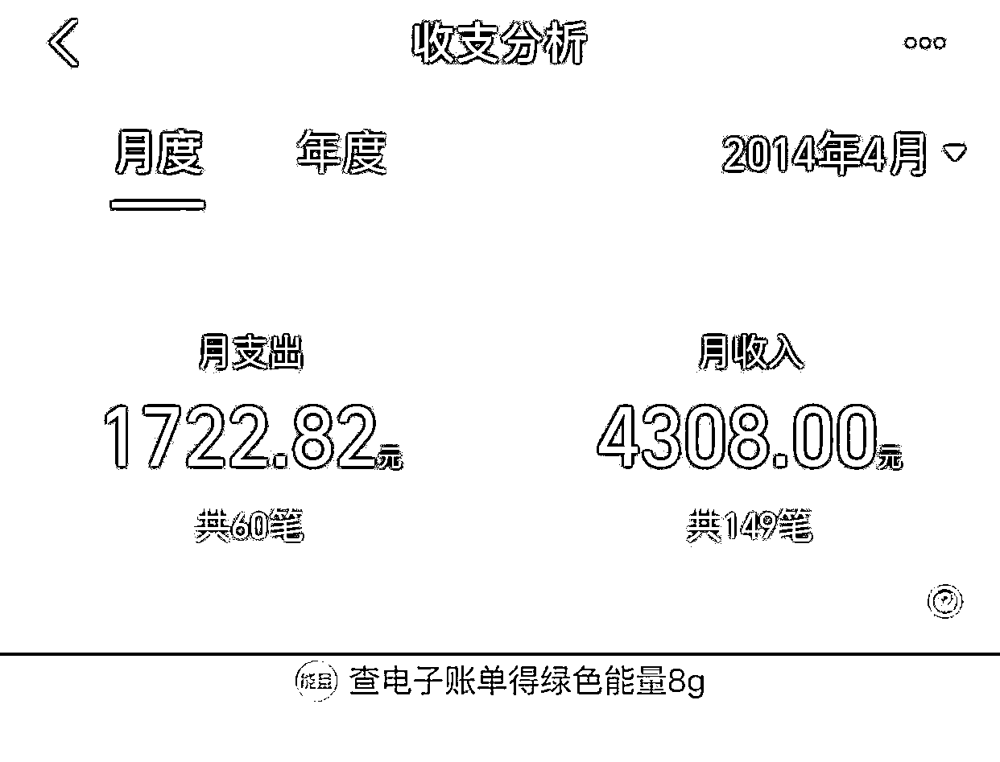
不过毕业后，对于未来要做什么，我很迷茫。但我唯一知道的是，我要做互联网行业。
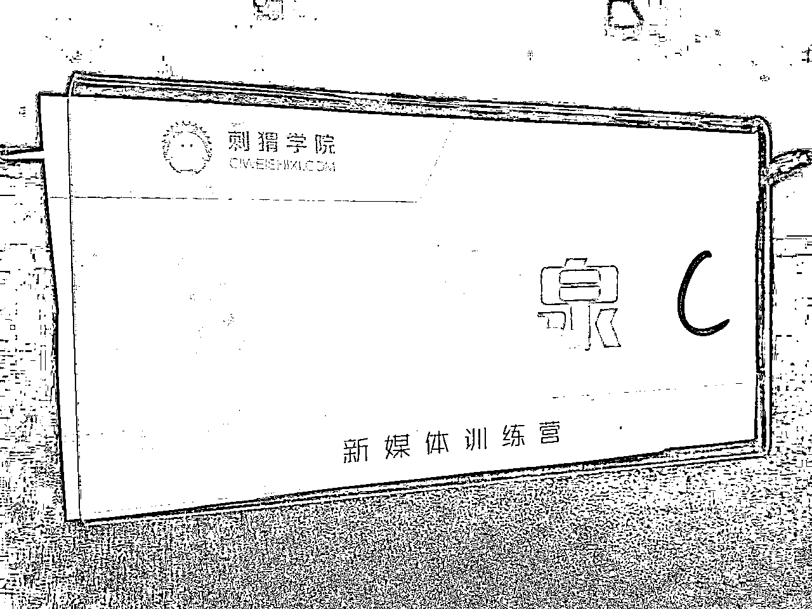
（当时为了转行互联网，参加了新媒体培训营）
于是转行做了互联网运营，起初几年我还是很有斗志的，不过到后来，我发现即便我运营着几十万粉的公众号，我始终都是在为老板的梦想奋斗，而我只是一个满足生存的螺丝钉，就算这个工作做到月入一两万，我也看不到留在深圳的可能。（如果你正在上班，希望这段话不要让你分心，不管未来做什么选择，还是要做好手头的事。）
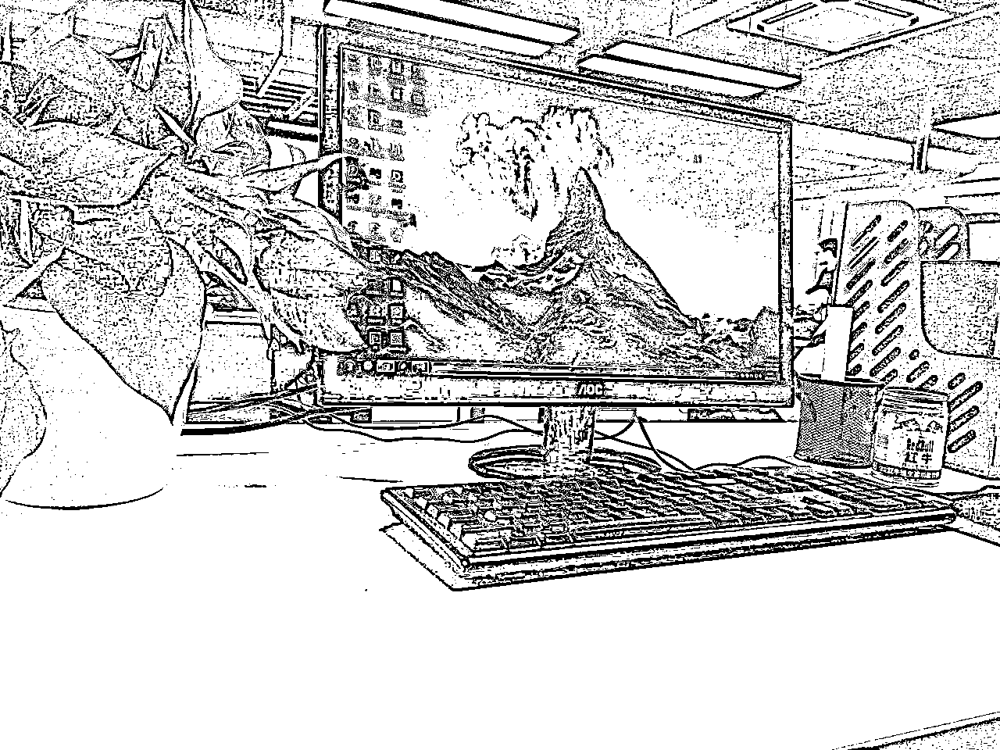
每天上班我觉得浑身不得劲，只有琢磨自己项目时，我才感觉充满了干劲。
所以除了做完日常工作之外，业余时间我也在测试自己的项目，2020年6月，时机成熟，我便辞掉了工作，搬到了另一个创业成本较低的城市。
我记得当时上班时，一本书对我启发很大，《百万富翁快车道》，名字很俗，但内容却完全颠覆我的固有观念。我还记得里面的“慢车道”和“快车道”，如果打工是慢车道，那要走上快车道，一定得是自主创业这条路。
辞职这件事，虽然我说的这么轻巧，但其实没有那么简单。
考虑辞不辞职，我也反复犹豫了一年多，因为当时公司的工作很固定，我基本每天不需要花多少时间。如果我辞职了，不仅失去了这么轻松的薪水，也还要自力更生。
但我知道一个词，叫温水煮青蛙，我问自己，这样5年下去，你有什么改变吗？我就明白了，我需要突破舒适区，为新的人生做好准备，于是在那一年里，我开始测试各类项目，以保证我辞职后，能够有满足生存的收入来源。
如果你看过《肖申克的救赎》，我每天业余时间测试项目，就像是安迪每晚在他的房间里凿墙一样，他准备了20多年，很幸运，我只花了不到2年时间。
所以如果你有辞职创业的打算，我并不建议你贸然辞职，你在职场发展好，其实也能收获理想的生活，如果你是追求安稳的人，更不建议你盲目学习别人。一个人得清楚自己喜欢什么，安稳还是折腾，各有利弊。
如果你清楚自己要的是拥有一份属于自己的事业，我建议你需要在辞职前做好3个准备。
你得至少准备12个月的生存资金，就是你没收入的情况下，你还能维持12个月。
如果你在辞职前有副业收入，那么副业需要至少连续6个月支撑你的生存需要。
我更建议你在上班的业余时间，能发展自己想做的事业，当额外收入能够稳定支撑你的生存时，这样你辞职才有很好的过度。
很多人会回老家，住在家里，觉得能节省开销，其实得不偿失。
如果你长时间呆在家里，父母也会担心你，周围的人也会流言蜚语，创业的人需要一个安静的心态环境，不要高估自己的心理承受能力，可能亲人的一两句话，可能就让你心态失衡了。
另外如果你在老家，会有很多七七八八的杂事干扰你，你之前的同学朋友也会找你玩，当你们几瓶啤酒下肚，你看着他们现在过得悠闲自在，你也会怀疑自己的死磕意义在那里，慢慢的你就会被同化，也变得慵懒和知足。
我更建议你在一个远离亲友的地方，虽然听上去不近人情，但创业不是娱乐，是下个月吃不上饭就宣告失败的事业，你需要一心一意放在上面，排斥其他干扰。
为了避免亲友担心，前期可以告诉他们自己依然在上班工作。等有一定成绩了，再拿着成绩说话，他们会支持你的。
创业不是上班，没有人每个月给你固定打钱，所以需要做好成本控制。
创业有时候是这个月收入很高，下个月就很惨淡了，所以在你收入很高的情况下，不要自我膨胀，疯狂消费，当后面市场低迷时，你就要为之前的大手大脚付出代价。
有句话叫居安思危，哪怕现在过的很好，也要为可能的风险预备资金。
平时养成记账的习惯，现在记账类APP也很好用，当你平时记账后，你会注意控制自己的支出，同时每个星期复盘下数据，你会发现很多支出是没必要的。
接下来我谈下大家关心的话题，创业的话，做什么项目比较好？
因为每个人情况不同，这里仅靠我个人经验，分享我个人看好的3个方向，以下是适合个体发展的轻资产方向，如果大家有更多的项目方向，也欢迎分享。
个人IP是我非常看好的方向，优点是做IP做好了可以做一辈子，粉丝信任强，可以扩展人脉，挖掘到更多赚钱机会。缺点是前期打磨周期长，而且IP也不适合批量化复制，因为每一个IP都是独有的。
但IP依然是非常好的个人创业方向，比如我做的IP：白龙笔记，就是一个IP，定位是创业领域。各个行业都可以做IP，需要根据你的职业、优势、资源来选择适合自己的领域。
比如我最近刷到一个汽车IP，他每期都会更新他的客户提车视频，这样粉丝看到了也会找他买车，但是他自己是不需要囤车的，他和当地各个4S店都有合作，通过他买车还有优惠，这样3方受益。看他今年的视频分享，去年至少有50W收益，很好的空手套白狼案例。
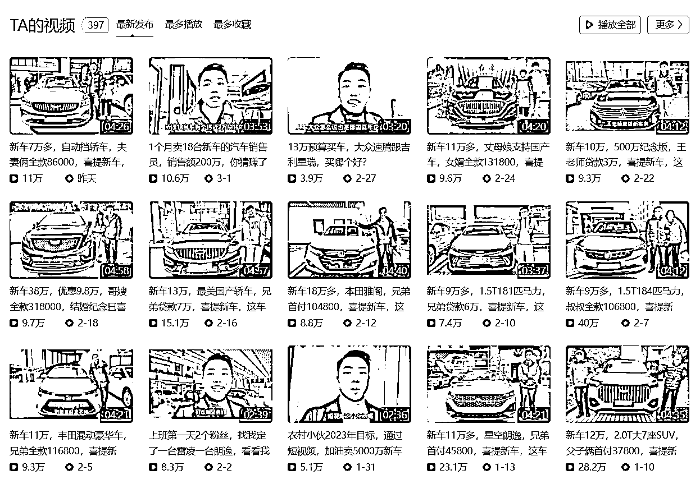
还有很多行业的IP，比如创业、电商、抖音、小红书、自媒体、房产、瘦身、育儿等等行业的IP，很多非常小众的领域也有IP，你不需要做很大的IP，耕耘好一个细分领域就非常赚钱。
顾名思义，就是卖一些资料、软件类的虚拟资源，优点是不需要花钱进货，一份资料可以复制发给客户，但不需要额外成本。
另外很多虚拟资源也是刚需，比如考公、考研、教资、幼师、学科资料、护考、会计考试、网课等等都是很多人需要的，但要注意版权，优先选择无版权的资料。
咨询类项目，主要靠自己的时间赚钱，不需要花钱进货，这和虚拟资源项目的优点是一样的，成本小，不像实体产品需要进货。
咨询类项目的优点是客单价可以做到比较高，比如我之前做过塔罗咨询，大牌阵可以做到300+的收费。当然咨询类项目缺点也很明显，靠时间赚钱，每天是有上限的，如果要突破，需要请人帮自己接单。
咨询类项目有很多，比如塔罗、命理、心理、情感、法律、身心灵、职业规划、营销策划等等。值得注意的是，一些咨询业务最好考取专业证书，同时在执业过程中，对客户提供专业且用心的服务，如客户不满意，建议做退款处理，客户的信任才是长期的根基。
以上3个方向都是适合个人的，我选项目的方向，一是要具有长期性，可以做一辈子，有积累性。二是成本小+收入上限高（一般是虚拟类），如果单纯是靠人力去赚取蝇头小利，不如跑外卖和滴滴实在。
当然这些也需要时间去积累，我从来不选择很快就能赚钱的项目，意味着别人也能做，那护城墙就消失了，当竞争加剧，利润也就消失了。
如果你在个人创业了，下面我分享我的一个工作配置。
前期创业考虑节省成本，我是居家创业。
住房是很大一块成本，前期不建议租办公室，很多人觉得创业嘛，得弄个办公室才像样子，有句话叫差生文具多，创业越简单越好，比尔盖茨刚开始创业，也是在一个车库里办公。我建议是自己租个房子，居家办公，前期能省钱就省钱。
因为咱们是做互联网的，有张床，有台电脑有根网线就能赚钱，所以没必要在大城市里租房，比如深圳一套两室的，月租就可能五六千。现在很多小城市房租便宜，甚至你可以去鹤岗，一个月两三百的都有。
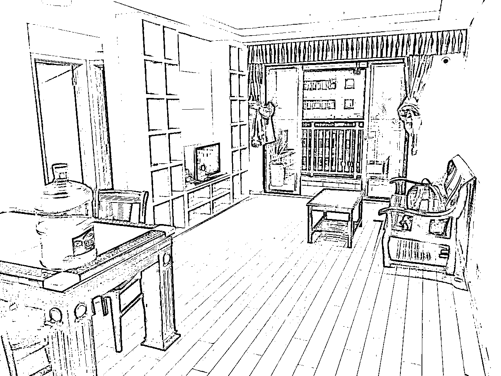
当然也没必要跑那么远，你可以在你本省找不太发达的城市，上安居客或者58看看租金，会发现新天地。
我之前在B站刷到一个博主，叫轻徙鸟，他是一个UI设计师，现在是自由职业者，一边旅游一边工作，他的视频分享了很多租金便宜的城市，比如一个月500不到的海景房，看看也挺有意思。
当然，前期找租金便宜的地方，只是为了过渡，等你过一两年收入上升了，再搬到你理想的城市。
另外，如果你想居住和工作分开，可以去找本地的共享创业空间，租个卡位就几百块。不过不是每个城市都有。
电脑尽量在承受范围内，弄个好点的，用起来不卡，处理事情更快。
尽量选择台式组装机，相同的钱你可以拿到更好的配置，而且散热更好，同时屏幕更大。需要注意，不要选择淘宝销量靠前的店铺，基本是忽悠小白的，可以在知乎或B站找长期经营且信誉好的博主。
之前显卡涨价，我选择了笔记本，因为屏幕太小，长时间用视力也有所下降，后面我选购了一个24寸的显示器，把笔记本当主机连接，眼睛也舒服了很多。
如果你会淘闲鱼，也可以在闲鱼上淘个人使用的主机。
另外如果你测试项目，需要用到多部手机，也可以在闲鱼上淘几部，优先选择个人卖家的。
买二手没什么可耻的，钱花在刀刃上，不用为多余的溢价买单，是成年人理智的选择。
网速尽量快一些，如果太慢，很影响人的办公效率和心情。
选择300M以上的网络，我办的是移动的，价格便宜些。
偶尔出现网速卡顿的情况，基本不影响使用。但如果你预算够，建议还是使用电信的网络。
桌子也不用太讲究，房子如果有桌椅，能用也行，也可以淘宝/拼多多买，一百多就搞定。
椅子如果你不在意，随便都可以。但因为我长期要坐着，所以在这方面也研究了下。
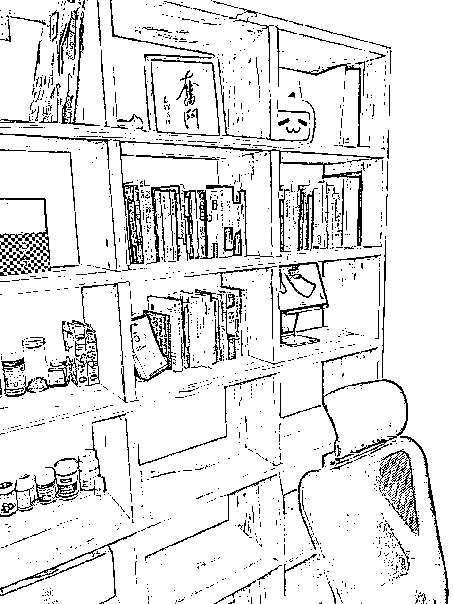
不要选择电竞椅，尽量选人体工学椅，能够给你背部带来很好的承托，我选的是西昊五六百的，性价比挺高，另外网易严选的也不错。
以前因为太忙，都是点外卖搞定，后来加上吃饭不规律，脾胃也有点影响。
现在是不忙的话，会自己做饭，看了王刚的视频，发现专业厨师都用的铁锅，于是也买了铁锅，学会了热锅冷油，但发现做菜很吃油，为健康考虑换了不粘锅，但注意不要长时间干烧，涂层会脱落。用1年要定期更换。
我对吃饭的要求是不难吃就行，弄熟就行，主要还是要营养健康，少油少盐，尽量少用调味品，少吃生冷油腻的东西，这些对脾胃不好。
在我眼里，食物主要分为蛋白质、蔬菜和碳水，所以很多时候，做菜不用非要按食谱去搭配，只要是适量碳水+足量蛋白质和蔬菜，就可以了。米饭的话，可以搭配些糙米，更加营养。
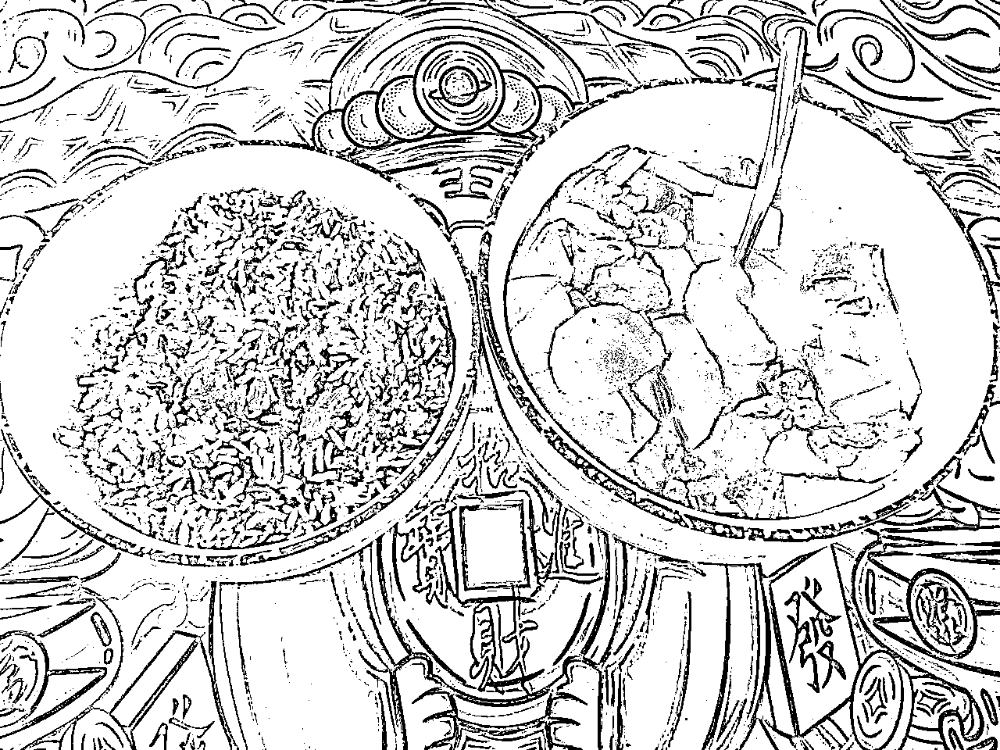
买菜可以在美图和饿了么下单，会上门送菜；如果你出门多，可以附近顺手买点肉和蔬菜，如果你家楼下有钱大妈，晚上7点后会开始打折。
做菜熟练的话，只需要不到20分钟搞定，以前每天光工作，觉得做饭浪费时间，其实做饭也属于休息，在做饭的过程中，会有一种治愈心灵的宁静，人生中很多事我们无法控制，但一盘简简单单的菜，却可以自主掌控，慢慢你会收获对生活的主动权。
有很多人离开公司后，会忘记一件事，就是交社保。
以前是公司帮你交，现在别忘了要每个月自己去交。
我是很早在淘宝上找了一家代交的，今年5月1日之后就不允许了，现在的办法是自己去缴纳，或者在支付宝上，通过市民中心-社保-灵活就业人员参保登记，进行缴纳。如果大家有更好的方式，可以交流。
交完之后，记得上官网或者支付宝上，搜下你的缴纳记录。
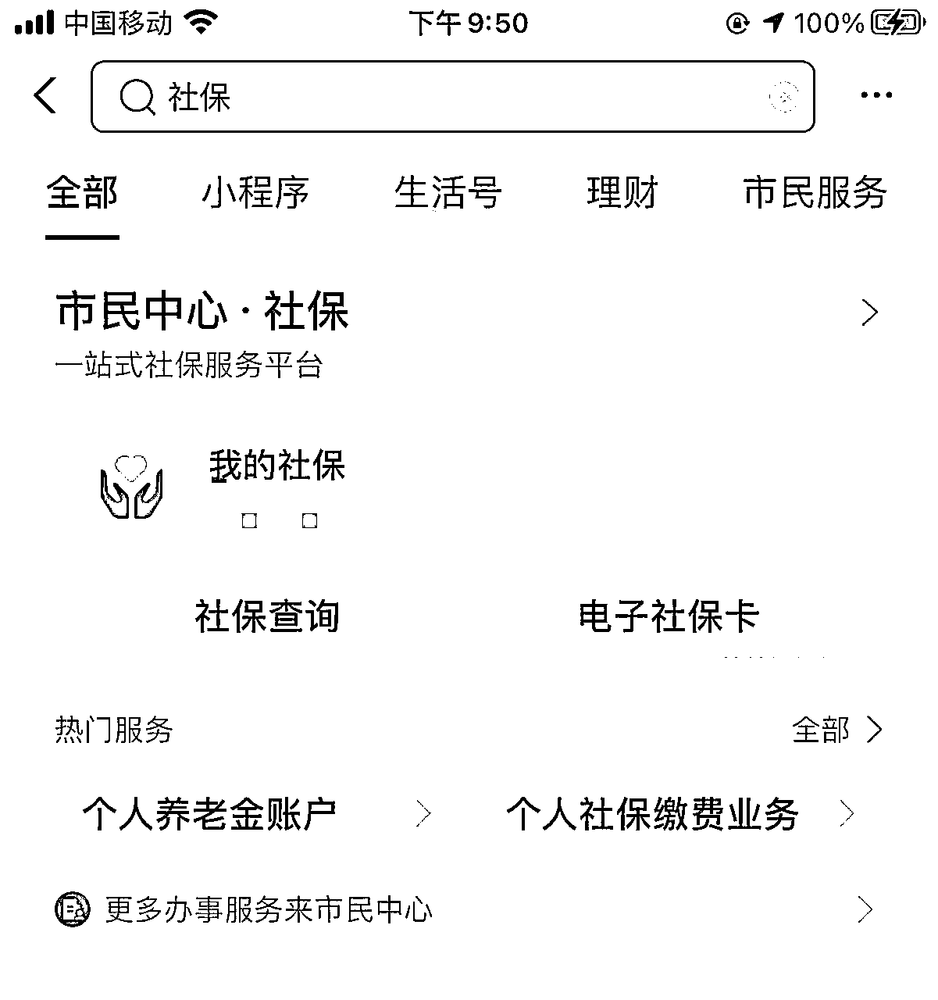
另外记得每个月月初都要交，断交一个月不能补缴，对于你以后买房什么的，也有一定影响。
前期如果资金遇到困难，可以稍微借助一些工具，比如支付宝借呗、花呗，微信微粒贷，京东金条，银行APP的借贷业务。这些都是正规大公司的业务，不要选择不知名的机构。
但这个属于双刃剑，如果你手上有现金，不要去使用，因为这些都是有利息的；除非遇到资金欠缺的情况，才可以动用一点。
千万不要过于依赖这些。让这些成为你的帮手，而不是让你成为贷款的奴隶。也不要超前消费，《小狗钱钱》里面有一个原则，就是尽量用现金，不要使用借贷，如果非要使用，周期可以长一些，因为未来钱会越来越贬值，而且也会减缓每个月压力。（可以运用到买房）
自由职业可以晚起一些，但尽量早上9点起床，睡觉尽量在11点前上床睡觉。
以前我工作没有时限，一忙忙到凌晨一两点，这是很不好的习惯，现在我对自己的要求，不管事情有没有做完，11点就要洗澡睡觉了，睡前会泡个脚，有助睡眠。
毕竟我们是要长期创业的，养成一个良好的作息，才能一直持续做好事情。
我的工作一般分为三块：引流、转化和服务，每个阶段根据情况会有所侧重。
一个人要忙这么工作，有时会吃不消，我也会使用助手或者外包。
我的助理是在我的社群里认识的，给了我很多帮助。
如果有些工作是重复的，或者不重要的，你可以交给别人。比如BOSS直聘上，你可以发帖找人，帮你做兼职或者外包工作。如果你没有公司资质，可以淘宝搜BOSS代发、58代发，可以找到这样的业务，让别人帮你代发找人。
我用到的是艾维利工作法，每天会先把今天要做的事写在一张A4纸上，然后根据重要程度排序，优先完成重要的事，这样你长期坚持，会越做越值钱的。
因为普通人都会先选简单的事做，等到做重要的事时，他就没时间了，每天都干不值钱的事，自然就会让自己越来越不值钱。
推荐大家看下《小强升职记》，是一个讲时间管理和任务管理的书，通俗好用。
最近还看到一个做事的法则，很有帮助，分享给你：
2分钟能做完的事，马上去做。
要花一会功夫的事，让自己先做个5分钟，只要启动起来，惯性会推动你完成。
上班的话，一线城市一般人的上限是2W，大部分人到1W就基本稳定，很难突破了。
如果是自主创业的话，就不是别人给你发工资了，你的收入=销量X单份利润，如果你的产品或业务利润在300，每月完成33单，即可达到月入过万的收入。而且随着你的时间积累，销量和客单价也会逐步增长。
当然，这是做起来的情况，如果你没做起来，收入为0也是很常见的，这是风险提醒。
我更建议大家有个固定工作，业余时间做个副业，比如你工作6000，副业4000，两个一搭配，就可以做到月入1万了，我在辞职前就是这个搭配，持续了很久。
你可以决定今天几点起，几点睡，今天是工作还是去旅游，你不用和大家一起挤晚高峰，也不用在五一国庆节里，和大家一块凑人堆里看景区。
但是优点也是缺点，如果你不够自律，很容易形成懒散的作风，作息不规律，那不如好好上班更加健康。
有很多人上班时做副业，还做的挺好，全职做项目后，反而收入下降了，就是自律性不够的原因，缺少一个工作的氛围。
居家办公，不需要通勤，这也是一个好处。
但坏处也有，就是缺少户外活动，接触人少，难免会沉闷无聊。
上面就是4个主要缺点，居家办公难免隔绝人烟，社交面很窄，所以我也养了一只猫，平时工作累了，可以逗逗猫，缓解压力；心情抑郁时，有猫在身边，也可以感觉到世界上还有一个小生命跟自己在一起，也能治愈心灵。
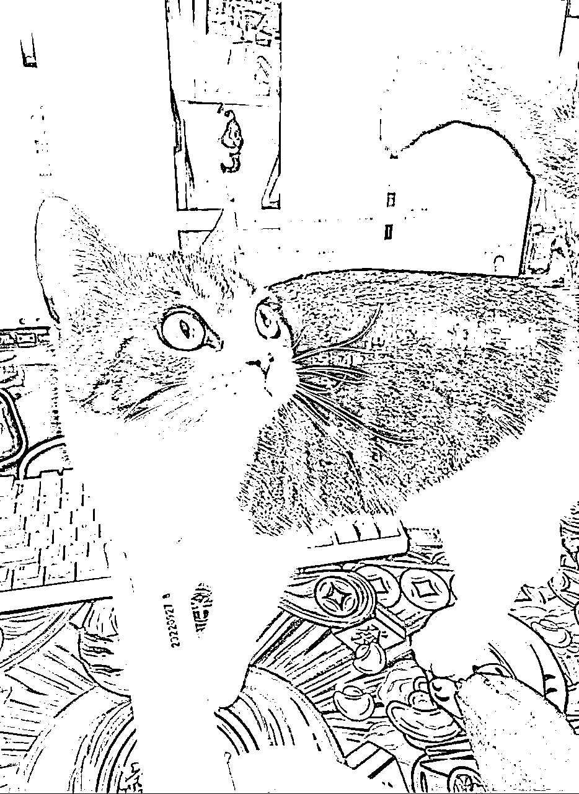
居家创业适合初期创业，不适合长期这样，考虑以后成家了，有妻子孩子，工作和生活还是得分开的。
所以未来会组建工作室，兜兜转转，又回到以前上班的模式，早上起床去公司，晚上回家睡觉。这样规律又健康，感觉每天都是为自己的梦想在努力。
以前只关心赚钱，现在也要多和人交际，最近也在找对象，也和一些同行朋友线下见面，聊聊生活，聊聊未来，还是挺惬意舒缓的。
因为长期久坐，我制定了一个“每日轻运动”的计划，现在已经是第433天了。（中间累计有偷懒三十多天没运动）
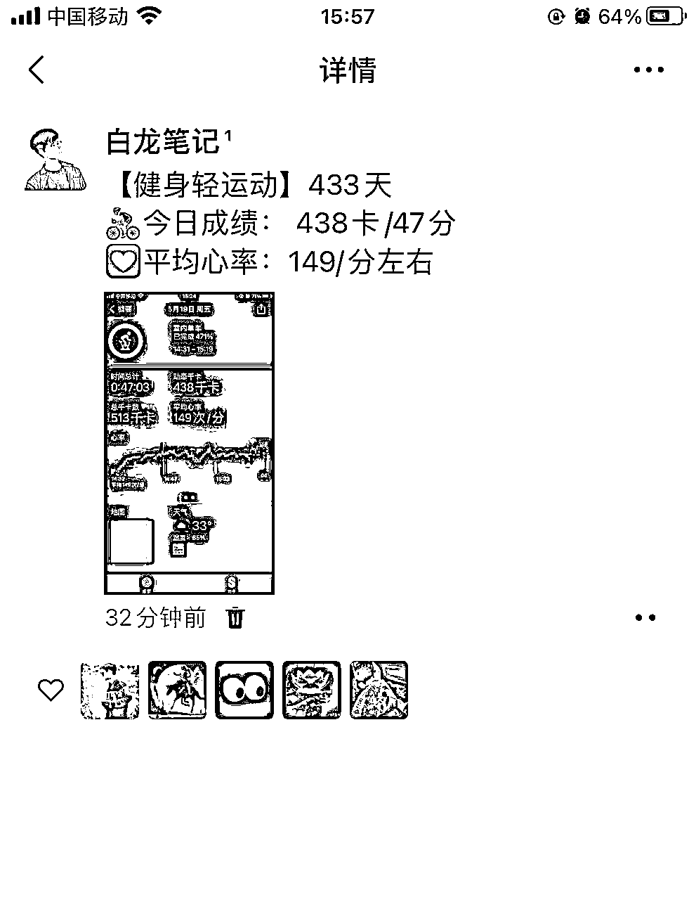
我们做互联网的，长时间工作劳累，一定要注意运动，保持健康的状态。
如果附近有健身房可以办张卡，一周运动3-4次；也可以买动感单车、跑步机在家每天运动20-60分钟。
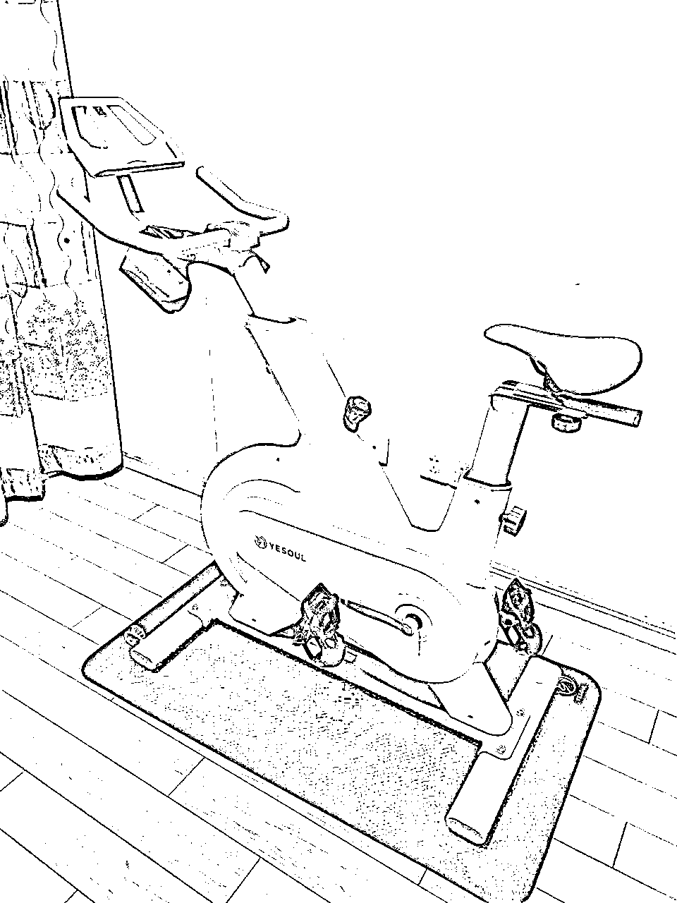
当初是看了《微习惯》这本书，产生了养成一个小习惯的想法，于是开始执行。
一开始我只要求运动5分钟就行，后面感觉不得劲，加到了10分钟，后来是20分钟，再就是30分钟。现在我觉得30分钟不得劲，提高到50分钟。
所以很多时候不用好高骛远，先用一个小目标开始，再逐步提升，这样会越走越顺。
以上就是关于个人创业，白龙的一些简单的分享，创业有风险，裸辞需谨慎，不要因为一时冲动，或者有些不切实际的幻想，就冒然加入创业，一切都需建立在循序渐进、客观实际的基础上。
不管你是在职场工作，还是独自创业，没有谁优谁劣，哪一条路做好了，都有非常好的成就。最怕的就是左右摇摆不定，干这个想那个，如果你坚定的选择了一条路，那就拿出1年的时间，去做好这件事吧，你会有意想不到的收获。
最后祝圈友们都能拥有自己理想的事业，多多赚钱，身体倍棒；也感谢亦仁大哥和生财工作人员的价值付出，祝生财越办越好~明年还会继续续费，望顶峰相见。